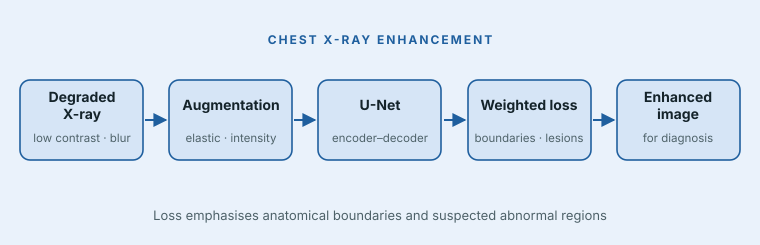

Challenge
Poor contrast, motion blur and inadequate exposure in chest X-rays can hinder pneumonia detection.
Medical imaging · Research Assistant, Medical Imaging Group · Feb – Jun 2024
A deep-learning model that improves the diagnostic quality of degraded chest X-rays.

Poor contrast, motion blur and inadequate exposure in chest X-rays can hinder pneumonia detection.
Built a U-Net enhancement model with a weighted loss that emphasises anatomical boundaries and suspected abnormal regions, plus elastic-deformation and intensity augmentation.
Unlike standard losses that treat every pixel equally, the model focuses reconstruction quality on the regions that matter for diagnosis, and augmentation improves robustness across anatomy and exposure conditions.
Credits: University research-group project. Medical data and code are not publicly available.